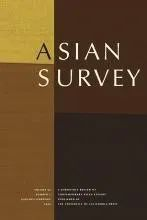

收录于合集

国政学人(International Politics Scholars)本周将隆重推出【国别研究】专栏，推荐内容源于《亚洲调查》（Asian
Survey）杂志于2020年初专题推出的世界各国2019年发展综述，这些综述对我们整体把握全球经济、政治与社会发展动态具有较强的参考价值。公众号后台（会话页面）回复“亚洲调查”即可阅读本专栏系列文章。
计划更新预告：东北亚：朝鲜、韩国、日本；东南亚：越南、新加坡、马来西亚；南亚中亚：印度、阿富汗；大国研究：美国、俄罗斯，敬请关注。
作品简介
【作者】 Mustafa Izzuddin是新加坡国立大学南亚研究所研究员，曾在俄亥俄大学、乔治城大学担任富布赖特访问学者。他的研究重点是外交政策分析，特别是新古典现实主义理论，小国与中等国家外交和第三世界安全。他常对新加坡、马来西亚、印度尼西亚与文莱的政党政治和外交政策发布评论。近期他的研究兴趣是以地缘政治、安全与防务和国际关系视角研究东南亚国家及其海洋权益。
【编译】 蔡 宇（国政学人编译员，中国人民大学）
【校对】 刘潇昱
【排版】 杨 洋
【来源】 Izzuddin, Mustafa. “Malaysia in 2019.” Asian Survey 60.1 (2020): 100-08. doi:10.1525/as.2020.60.1.100.

期刊简介

Asian Survey由加利福尼亚大学出版社出版，它是美国同类期刊中唯一关注南亚、东南亚、东亚国家当代国际关系问题的期刊。在亚洲地区局势变得越发复杂的今天，Asian Survey提供对时事、政府政策、社会经济发展和金融制度的可靠分析。期刊涵盖范围包括外交、裁军、军事和现代化、民族暴力等议题，该期刊影响因子为0.611。
2019年的马来西亚：混乱中的稳定
Malaysia in 2019: Eduring Stability in a Chaotic Year
Mustafa Izzuddin
内容提要
2019年是马来西亚政治转型的一年。在2018年第14次马来西亚大选中希望联盟压倒性地战胜国民阵线成为执政党。这一年内，国民阵线从其政治败局中艰难走出，马来西亚人民日益习惯于两党联盟执政的政治体制。在政党政治和选举政治疲劳、社会不满和经济增长减速的多重影响下，马来西亚努力度过国内政治难关，维持了国家稳定。 关键词： 党派政治、选举、社会不满、经济增长减速、外交政策平衡行为
文章导读
在2018年第14次马来西亚全国大选(GE14)中，马哈蒂尔领导的希望联盟(Alliance for hope，简称希盟)击败了独立后长期执政的国民阵线（National Front, 简称国阵）实现政治转型。这是年轻的希盟自2015年成立后第一次掌权。马来民族统一机构（UMNO，简称巫统）作为国民阵线联盟的第一大党，政治命运经历波折。巫统领导人明智地决定同马来西亚伊斯兰党（PAS，简称回教党）合作，以期从第14次大选的颓势中反弹。马来西亚经济在2019年前两个季度中缓步上行。然而2019年后两个季度国内投资增长和出口出口需求不振导致马来西亚经济增速放缓。同时马来西亚国内民族主义者与伊斯兰保守主义者的联盟使国内种族- 宗教矛盾抬头，引发社会不满。但是 尽管面临国内经济社会矛盾，马来西亚仍然有效实施了平衡外交。
01
政党政治和选举疲劳
希盟的执政地位因国家议会和州议会补选(by-election)失利受到影响。在2019年最后一次柔佛州丹戎比艾(Tanjung Piai)议员补选中，执政党希盟惨败于在野党国阵。这次选情的原因与在野的巫统与回教党合作成立“国民共识”(National Consensus)联盟，挽回部分马来人选民和华人选民的选票相关（马来西亚华人公会（简称马华公会）也是国阵政党联盟的一员）。 巫统领导人宣布国民共识在6个月内将成为正式的政党联盟。若国民共识联盟顺利成立，早期存在的国民阵线是否存续将成为问题。作者预测，若国民共识在未来的第十五次全国大选(GE 15)中当选，可能产生中右翼或极右翼政府。 **强大与团结的巫统是 国民共识政党联盟的成功的必要前提 。**如果国民共识并未取代国民阵线，巫统将与马来回教党、马来西亚印度国民大会党、马华公会一同争取东马地区（沙巴州和沙捞越州）流失的选票。相反，如果国民共识联盟成功问世，将更有力地争取东马地区的政党，以形成更广泛的在野党政党联盟。2019年，已到耄耋之年的首相马哈蒂尔主导了马来西亚国内的政治话语。在希望联盟内部，人民公正党与土著团结党的政治斗争也引人注目。作者认为在马哈蒂尔卸任后，希望联盟的领袖可能出自人民公正党。希望联盟内部的安华与阿兹敏将可能举行新一轮政治竞争。
02
**社会与经济发展
**
尽管2018年执政党发生变革，马来西亚的种族与宗教极化在2019年仍然没有减弱的迹象。 这是因为希望联盟在执政后延续了前朝政府偏向马来人的政策。马来人和华人的冲突仍是经久不衰的政治议题。除此之外，除了偶有的极端主义冲突，马来回教团体和其他信仰团体的关系相对平静。 伊斯兰宗教团体内部的紧张关系走上前台。 随着马来西亚的“阿拉伯化”风行一时，对伊斯兰主义的去自由化（illiberal）解读激化了不同教派的紧张局势。由于大部分马来人都是逊尼派穆斯林，在马来西亚的许多地区什叶派并不作为伊斯兰教的正统教派。马来西亚穆斯林的立场在极端保守主义者和自由改革主义者的拉扯中趋于极化。同时，马来西亚反腐进程缓慢也加剧了社会不满情绪。2019年第15届苏丹穆罕默德五世成为马来西亚历史上首位辞职的现任最高元首（又称杨迪- 佩尔图阿贡）。由于君主制在马国是神圣的制度，在位的国王是国家团结的象征和伊斯兰的代理人(custodian)，国王退位使许多马来西亚人震惊。但宪法上的君主制仍被推崇，在新国王继位后国家恢复常态。 在经济形势上，马来西亚2019年的经济增长并不显著。在前两个季度，马来西亚经济增长缓慢，季度经济增长率分别达4.5%和4.9%，在第三季度增长4.4%，较上一季度相对放缓。 尽管2019年通货膨胀水平并未失控，由于国内工资增长停滞，居民生活成本高居不下。马来西亚经济增长受阻源于中美贸易纠纷和马来西亚国内政治的不确定性等因素，影响了投资者信心。
03
“平衡”的外交政策
2019年的大部分时间内，马哈蒂尔当局采用了外交政策“平衡”的策略。在中国与日本、沙特阿拉伯与伊朗、印度与巴基斯坦以及印度尼西亚和新加坡之间平衡。马来西亚维持着其“具有伊斯兰特色的中间势力”地位。尽管首相马哈蒂尔在外交事务上有极大的影响力，但马来西亚外交部仍在外交政策制定中发挥了重要作用。 马来西亚与巴基斯坦关系的转变是2019年马来西亚南亚政策的亮点。 与前任政府倾向于印度的外交政策不同，马哈蒂尔政府试图在印度和巴基斯坦中寻求“平衡点”，并向巴基斯坦倾斜。时任首相马哈蒂尔热衷于同发展中国家以及伊斯兰国家保持更紧密的关系，而巴基斯坦恰好符合这两个标准。马来西亚同巴基斯坦关系的反弹引发了马来西亚同印度关系的疏远。在克什米尔问题上，马哈蒂尔公开指责印度“侵略和占领”了克什米尔地区，侵犯了该地区人民的自主权。在农产品贸易问题上，印度国内的民族主义团体呼吁抵制马来西亚出口的棕油作为报复。但马来西亚随后给予印度购买棕油的折扣，缓和了两国经济冲突。
马来西亚维护其他穆斯林占主体国家的“兄弟情谊”。第一，马来西亚、巴基斯坦和土耳其三国领导人倡议建立一个旨在消除西方世界“伊斯兰恐慌”的英语国际频道。 他们认为西方国家在改变“伊斯兰恐慌”上少有作为，试图改变西方世界对伊斯兰世界的错误认知，并推广伊斯兰世界的积极形象。 第二，2019年12月18日至21日，马来西亚、土耳其、卡塔尔和巴基斯坦四国作为发起国，在吉隆坡举行首届“吉隆坡峰会”。 作为一项多边倡议，吉隆坡峰会是多边性的伊斯兰会议组织(Organization of Islam Conference, 简称OIC)的补充。峰会试图建立包含伊斯兰国家领导人、智库、学者的广泛的国际网络，旨在向世界传递伊斯兰国家的真实声音。 马来西亚通过吉隆坡峰会获取政治资本存在两大考量。 首先，阿拉伯世界在东南亚长期存在领导力赤字，长期以来马来西亚试图扮演阿拉伯世界的领导角色；其次，国内统治联盟试图拉拢马来本土支持者，缓和来自在野党的压力。马哈蒂尔当局不愿意驱逐穆斯林学者扎基尔·奈克（Zakir Naik），也被认为是当局应对反对派压力的权宜之计。
吉隆坡峰会可能恶化马来西亚与沙特阿拉伯的关系。 沙特阿拉伯是伊斯兰会议组织（OIC）的主办方，一直自视为阿拉伯世界的领导者，任何挑战沙特领导力和影响力的行为将被快速回击。 对沙特及其盟友而言，其主导的“伊斯兰会议组织”是国际穆斯林事务唯一正统的多边平台。 在沙特的压力下，巴基斯坦和印度尼西亚的领导人退出吉隆坡峰会。这表明巴基斯坦和印度尼西亚的领导人将本国与沙特阿拉伯的关系置于同马来西亚关系之上。这一峰会被解读为沙特在穆斯林世界中控制权衰落的分水岭。但作者认为，马哈蒂尔困难错误解读和估计了地缘政治分歧。 马来西亚与朝鲜的关系自2017年金正男事件后降至冰点。 首相马哈蒂尔在2019年暗示其有意修复马来西亚与朝鲜的亲密关系。马来西亚同时希望在朝鲜和韩国之间维持等距离外交，期望作为朝鲜半岛无核化的调停者，避免冲突上升为区域战争。 马来西亚国防部在2019年颁布了历史上第一份防卫白皮书。 在印太地区地缘政治风险加剧的背景下，白皮书旨在为马来西亚应对内部外部安全提供十年规划。 马来西亚政府的首要担忧在于南海紧张局势的加剧，特别是中美持续摩擦恶化成为地区冲突。 作为南海冲突的相关方，马来西亚认为其应当加强海军战备保护本国的专属经济区。同时，白皮书称马来西亚将准备好承受包括中美对抗在内的潜在外部风险。马来西亚希望南海去军事化。尽管白皮书具有远大前景，但却缺乏具体举措。马哈蒂尔政府被希望进一步落实防卫白皮书的内容。
04
**结论
**
尽管2019年是马来西亚国内政党政治选举疲劳、社会不满和经济增长放缓的一年，马来西亚仍然成功应对其国内难题，继续成为东南亚相对稳定的国家，在外交政策上实行有效的平衡行动。对执政的希望联盟的研究表明，马哈蒂尔在大选期间对选民的承诺过多，在新政府成立后并未兑现其竞选承诺。为此，希望联盟逐渐失去其政治资本和国内马来人的支持。作者认为直至2019年末，希望联盟的执政合法性遭遇不可逆转的打击。在2020年后，希望联盟领导人将努力提升政绩以维持合法性，接受马来西亚选民的考验。若希望联盟本届政府无所作为，下一次大选或将迎来又一次政党轮替。
本文由国政学人独家编译推荐，文章观点不代表本平台观点，转载请联系授权。


好好学习，天天“在看”